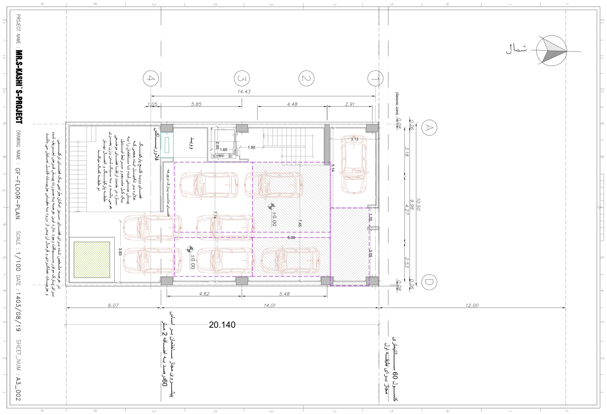

نقشه · طرح ۱۴۰۳
پلان همکف — پارکینگ (بازنگری نهایی)
همکف (±۰٫۰۰)
{kind=link}

به چه نگاه کنیم
- هشت خودرو روی برگه: پنج تا در دو زون خطچین بنفش ۷٫۷۴×۵٫۰۰ و ۷٫۴۵×۵٫۱۴، یکی در دهانهٔ ۳٫۱۳ کنار خیابان، دو تا در حیاط.
- هاشور مورب روی سه جای پارک شرقی و گوشهٔ ۱٫۲۰×۳٫۰۵: جایهای غیرمتعارف که تنها با جابهجایی خودروهای دیگر آزاد میشوند.
- برچسب «ووید» کنار آسانسور ۲٫۰۰×۱٫۶۰ در گوشهٔ جنوبغربی: همان خالیای که در طبقات بالا ایوان میشود.
- نوار «فضای مناسب پارک دوچرخه» در لبهٔ غربی حیاط و «فلاور باکس» در گوشهٔ آن.
- باغچهٔ مربع نقطهچین در جنوبشرقی حیاط، بالای گودال باغچهٔ زیرزمین؛ پلهٔ پهن گودال در ضلع غربی.
- پلهٔ اصلی ۱٫۵۰ در میانهٔ ضلع غربی و دو نشانهٔ ±۰٫۰۰ روی کف پارکینگ.
- یادداشت فارسی درون حیاط دربارهٔ خالیِ گوشهٔ پارکینگ و یادداشت پایین برگه دربارهٔ پارک موتورسیکلت در عرصهٔ سبز.
- همان دو یادداشت ضوابط (۶۰ درصد + ۲ متر؛ کنسول ۰٫۶۰) در پایین برگه.
فضاها
پارکینگ (۵ جای متعارف + ۳ غیرمتعارف)، ووید (خالی) کنار آسانسور، پلکان، آسانسور، فضای پارک دوچرخه، فلاور باکس، باغچه روی گودال، حیاط
یادداشت
این برگه آخرین بازنگری پارکینگ (اوایل آذر ۱۴۰۳) است که پس از مشاهدات من — دوچرخه، موتور، ورود پیاده — کشیده شد، ولی کادر عنوان همان شمارهٔ A3_002 و تاریخ ۱۴۰۳/۰۸/۱۹ برگهٔ اولیه را نگه داشته. حل شده: جای دوچرخه در حیاط، هشت جای پارک با هاشور برای موارد غیرمتعارف. حلنشده: مسیر پیادهٔ جدا از خودرو نیست؛ درختی نیست. یادداشتهای معمار در حاشیه میگویند خالیِ گوشهٔ پارکینگ ایدهٔ حجمی ساختمان را کامل میکند و وزن بصری طبقهٔ پارکینگ را سبک میکند، و این که در عرصهٔ سبز میتوان جای موتورسیکلت را هم گنجاند و جزئیاتش در مقیاس بعدی میآید. نام نقشه در کادر: GF-FLOOR-PLAN.